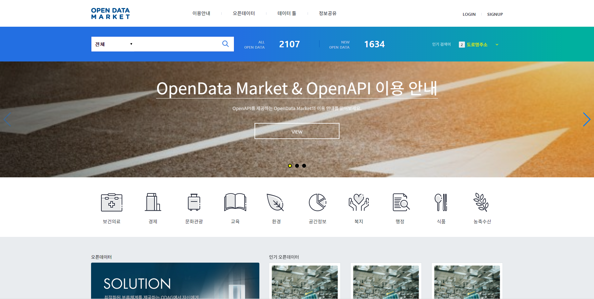
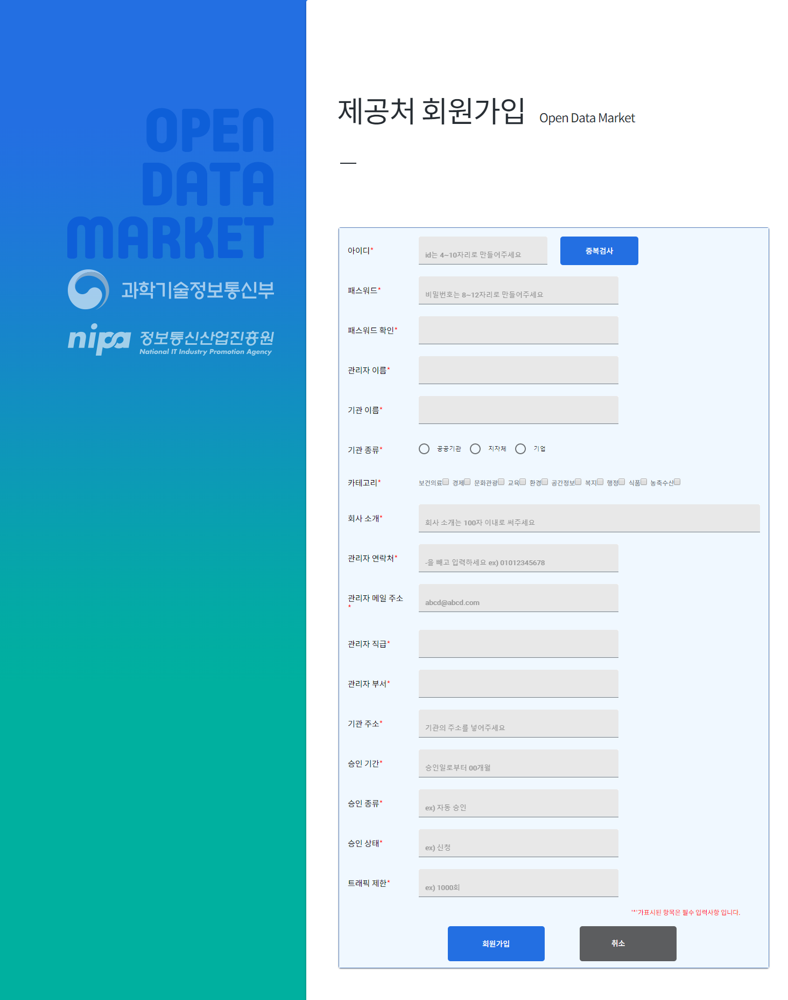
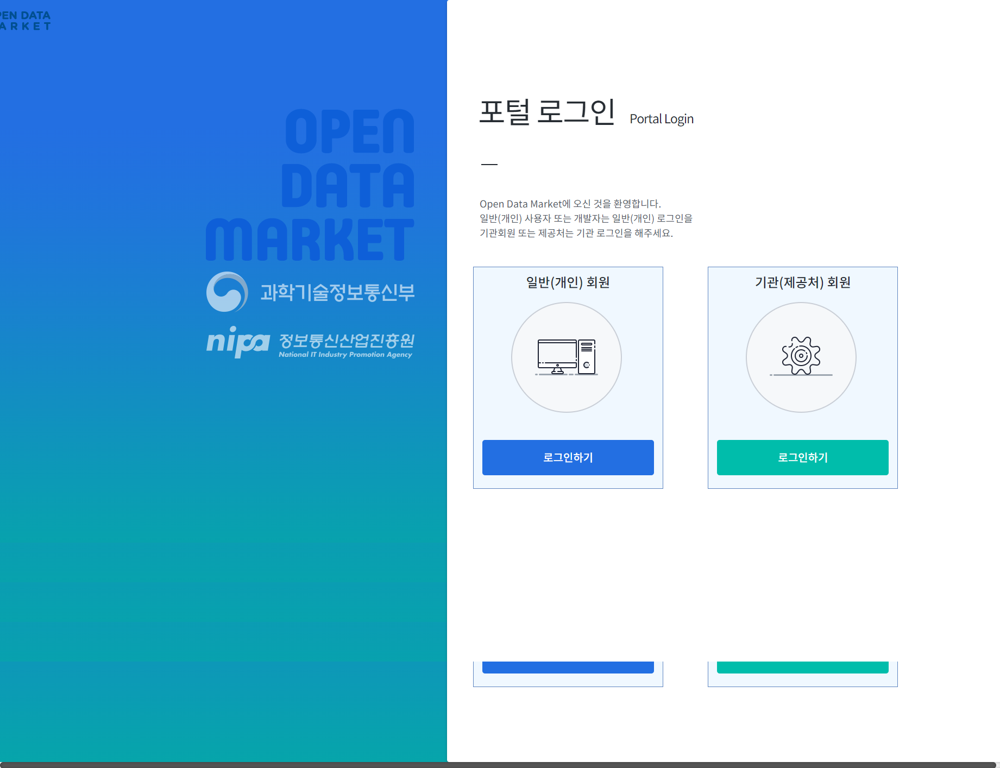
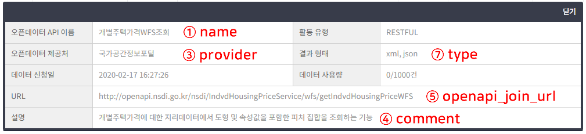
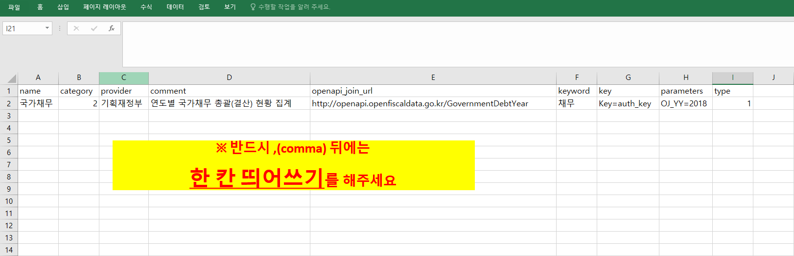
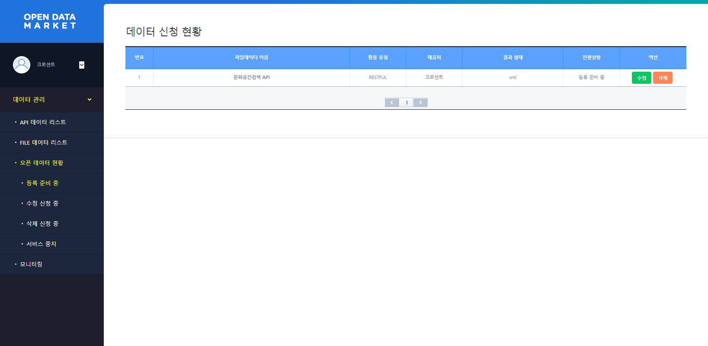
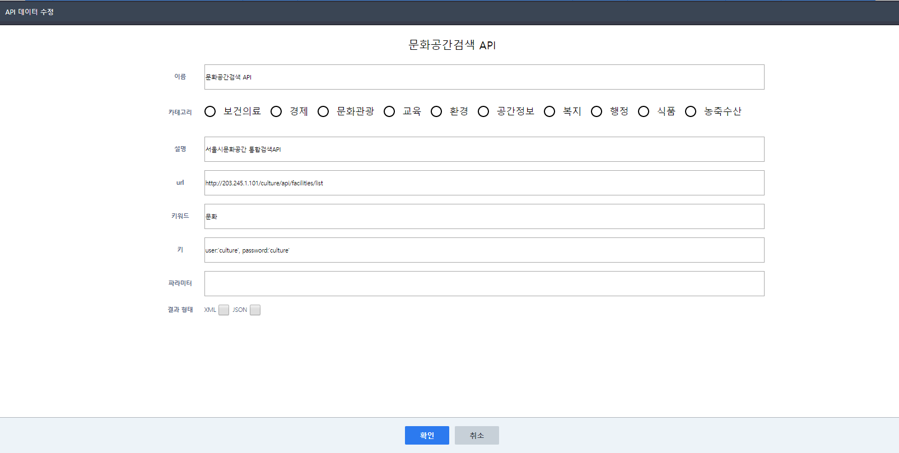
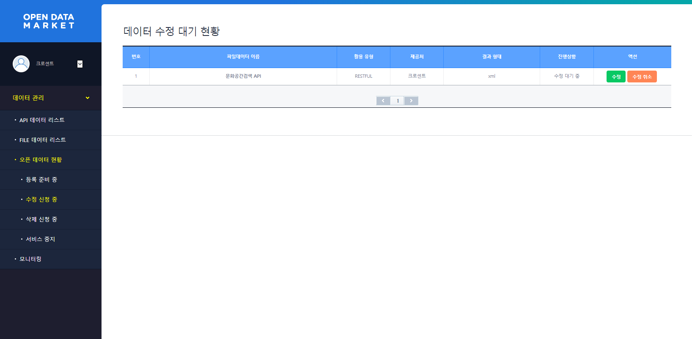
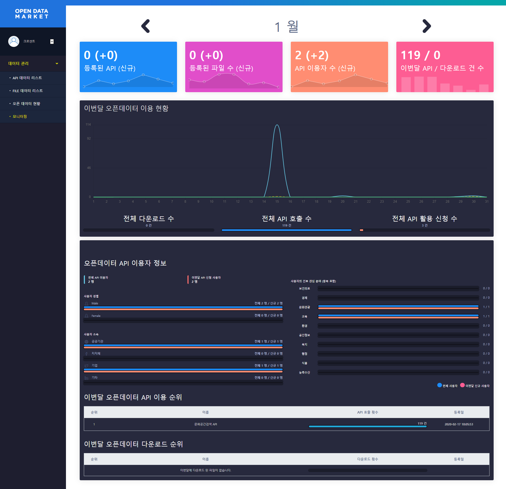

오픈 데이터 마켓 제공처 메뉴얼
오픈 데이터 마켓(OPEN DATA MARKET) 제공처 이용하기
오픈 데이터 마켓을 웹 기반으로 제공되며, 누구나 간단한 회원가입을 통해 쉽고 빠르게 이용이 가능합니다.
API 를 제공하고자 하신다면, 다음과 같은 과정을 통해 제공처 등록을 할 수 있습니다.
홈페이지 접속
오픈 데이터 마켓(OPEN DATA MARKET)은 http://203.245.1.104:3000/를 통해 접속이 가능합니다.

회원가입 (제공처 화면)
오픈 데이터 마켓의 오픈 데이터 API를 제공하는 제공처 회원가입을 진행합니다.
회원가입 시, 다음과 같은 정보가 필요합니다.
- 아이디
- 비밀번호
- 관리자 이름
- 기관 이름
- 기관 종류
- 카테고리
- 회사 소개
- 관리자 연락처
- 관리자 메일 주소
- 관리자 직급
- 관리자 부서
- 기관 주소
- 승인 기간
- 승인 종류
- 승인 상태
- 트래픽 제한

로그인
회원가입이 완료되었다면, 오픈 데이터 마켓의 로그인 화면을 통해 포털 로그인을 진행합니다.

제공처 오픈데이터 API 양식 맞추기
openapi 등록 양식 또는 filedata 등록 양식을 다운로드 받아 데이터 양식에 맞춥니다.
① name : 오픈데이터 API 등록 시, 표기되는 이름을 입력합니다. (ex. 개별주택가격WFS조회)
② category
- 보건의료
- 경제
- 문화관광
- 교육
- 환경
- 공간정보
- 복지
- 행정
- 식품
- 농축수산
③ provider : 제공처에 표기되는 이름을 입력합니다. (ex. 국가공간정보포털)
④ comment : 제공되는 API에 대한 설명을 입력합니다.
⑤ openapi_join_url : OpenAPI endpoint URL을 입력합니다.
⑥ keyword : 검색 시, 필요한 키워드를 입력합니다.
⑦ type : 타입 xml, json 를 선택하여 입력합니다. (둘 모두 제공한다면 xml,json 둘 다 입력)


데이터 양식에 맞춘후 파일을 업로드하면 좌측 메뉴 오픈 데이터 현황 > 등록 준비 중 화면에서 등록 준비 리스트에 목록이 추가됩니다.

만약 데이터를 수정하시려면 수정 버튼을 클릭하여 다음과 같이 수정 화면을 띄워 원하는 부분을 수정할 수 있습니다.

데이터를 수정 요청 시, 수정 대기 현황으로 이동되며 관리자의 확인 후 등록 처리됩니다.

제공처가 등록한 오픈 데이터 API는 모니터링 화면을 통해 다음 항목에 대해 상세히 확인 할 수 있습니다.
- 이용 현황
- 이용자 정보(전체 이용자, 이번달 신규 신청자, 성별, 소속, 관심분야 등)

여기까지 오픈데이터 API 제공처 등록 과정이였습니다.